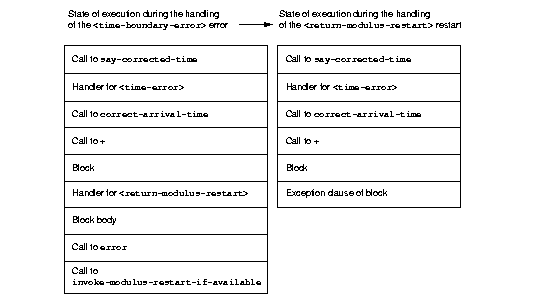

20.2.3 Definition of a recovery protocol
With the new definition of our + method on <time-offset> and <time-of-day>, if we add 5 hours to 10:00 P.M., a condition instance is signaled. The say-corrected-time method handles that condition, and prints a suitable error message. By the time the handler in say-corrected-time takes control, the addition that we were performing has been aborted. In fact, we are no longer even executing within the correct-arrival-time method. We have ceased executing there because handlers established using the exception clause of block perform nonlocal exits out of the current computation back to the block where the handler was established. Suppose that we, instead of aborting the addition, wanted to continue with the addition, perhaps modifying the value returned by the + method such that it would still be within the correct 24-hour range for <time-of-day> instances. In this section, we modify say-corrected-time to use a different technique for establishing a handler that does not abort the computation in progress, and we modify the + method for <time-offset> and <time-of-day> to offer and implement a way to modify the value returned to be a legal time of day.
First, we must find a way to execute a handler in the context of the signaler, instead of at the point where the handler was established. Then, we must find a way to activate special code in the + method to return a legal <time-of-day> instance as a way of recovering from the time-boundary exception.
The
lethandlerlocal declaration provides a way to establish a handler that will execute in the context of the signaler, just as though the handler was invoked with a normal function call by the signaler.The restart protocol provides a structured way for a handler to recover from the exception, and to continue with the computation in progress.
In this case, continuing with the computation means that the + method will return a legal <time-of-day> instance to correct-arrival-time, and correct-arrival-time will finish any additional processing and return normally to its caller.
To recover from an exception, we use a signaling and handling technique as similar to that we used to indicate the exception in the first place. This time, we signal a particular condition that is a subclass of <restart>, to indicate how the exception handler wishes to recover. We use a restart handler to implement the particular recovery action. You can think of a restart as a special condition that represents an opportunity to recover from an exception. Establishing a restart handler is a way to offer such an opportunity to other handlers, and to specify the implementation of the restart. Any handler, when activated, might signal a restart to request that a particular recovery action take place. Restart signaling and handling connects recovery requests with recovery actions.
For example, adding 5 hours to 10:00 P.M. is an error for <time-offset> and <time-of-day> instances. One way to recover from this error would be to wrap around the result to 3:00 A.M. Here, we define the restart class <return-modulus-restart>, which represents an offer to return from a time-of-day computation by wrapping the result:
define class <return-modulus-restart> (<restart>) end class <return-modulus-restart>;
Using the exception clause of block, we redefine the + method to establish and implement the restart handler:
define constant $seconds-per-day = $hours-per-day * $seconds-per-hour;
define method \+ (offset :: <time-offset>, time-of-day :: <time-of-day>)
=> (sum :: <time-of-day>)
let sum
= make(<time-of-day>,
total-seconds: offset.total-seconds + time-of-day.total-seconds);
block ()
if (sum >= $midnight & sum < $tomorrow)
sum;
else
error(make(<time-boundary-error>, invalid-time: sum,
min-time: $midnight, time-limit: $tomorrow));
end if;
// Establish restart handler
exception (restart :: <return-modulus-restart>)
make(<time-of-day>,
total-seconds: modulo(sum.total-seconds, $seconds-per-day));
end block;
end method \+;
If a handler (established with let handler) signals a <return-modulus-restart> during the handling of the <time-boundary-error> exception, then the sum will be wrapped around so that it will stay within the bounds of the time-of-day specification, and the result will be returned from the + method.
Next, we want to write a handler using let handler that will invoke the restart. However, before we invoke the restart, we want to confirm that the restart is currently established. Signaling a restart that is not currently established is an error. The available-restart method that follows returns an instance of a a given restart, if that restart is currently established; otherwise, available-restart returns false:
define method available-restart
(restart-class :: <class>, exception-instance :: <condition>)
=> (result :: false-or(<restart>))
block (return)
local method check-restart (type, test, function, initargs)
// Make an instance of the restart, so we can see whether it matches
// our search criteria
if (subtype?(type, restart-class))
let instance = apply(make, type, condition:, exception-instance,
initargs | #[]);
if (test(instance)) return(instance); end;
end if;
end method;
// The built-in Dylan function do-handlers will call check-restart
// for every handler currently established, in order (first is nearest
// to the signaler)
do-handlers(check-restart);
#f;
end block;
end method available-restart;
Dylan provides the do-handlers function, which iterates over all the currently established handlers, calling its argument (a function) on all the relevant information about the handler, including all the information necessary to instantiate a restart instance for restart handlers. The check-restart local method returns from available-restart with a restart instance only when a matching restart that accepts is found. All restarts take a condition init-keyword argument, which, if supplied, should be the original exception that occurred. If the handler that created the restart provided the original exception condition as an init- keyword argument, then restart handlers can handle restart conditions for only particular exceptions. If none of the established handlers match and accept the restart that we seek, then available-restart returns false. Note that you should establish restart handlers for instantiable restart classes only, because the restart classes will be instantiated by restart-savvy handlers. If the restart classes cannot be instantiated, then the recovery process will not operate correctly.
Next, we need to define a method to be called by the exception handler to invoke the restart whether it is available. If the restart is not available, the method will call the next-handler method, which will allow another handler the opportunity to decide if it will handle the exception. In other words, if the <return-modulus-restart> restart is not established, the handler for <time-error> established by say-corrected-time will decline to handle the <time- condition being signaled.
boundary-error>
define method invoke-modulus-restart-if-available
(condition :: <time-error>, next-handler :: <function>)
let restart = available-restart(<return-modulus-restart>, condition);
if (restart) error(restart); else next-handler(); end;
end method invoke-modulus-restart-if-available;
No return values are declared for invoke-modulus-restart-if-available, because we cannot be certain what next-handler might return. Our handler method must be prepared to return any number of objects of any types. Next, we establish a handler using the let handler local declaration:
define method say-corrected-time
(arrival-time :: <time-of-day>,
#key weather-delay :: <time-offset> = $no-time,
traffic-delay :: <time-offset> = $no-time)
=> ()
let handler (<time-error>) = invoke-modulus-restart-if-available;
say(correct-arrival-time(arrival-time, weather-delay, traffic-delay));
end method say-corrected-time;
The let handler local declaration establishes a handler for the <time-error> condition and for all that condition's subclasses. When the error function inside the + method signals the <time-boundary-error> condition instance, Dylan conducts a search for the nearest matching handler that accepts. In this case, the nearest matching handler that accepts is the handler established by say-. Because this handler was established by a
corrected-timelet handler local declaration, instead of by the exception clause of block, no nonlocal exit takes place. Instead, the function specified in the let handler local declaration is invoked in the context of the signaler. The error function essentially performs a regular function call on the function associated with the nearest matching handler. The function is passed the condition instance being signaled, and the next-handler function that might be used to decline handling this condition. In our example, the invoke-modulus-restart-if-available function will be called from error. Once called, invoke-modulus-restart-if-available will first see whether the <return-modulus-restart> restart is established. If the restart is established, we will invoke it by signaling an instance of the restart. If the restart is not established, we decline to process the <time-boundary-error> condition in this handler. Assuming that no other handlers exist, the debugger will be invoked.
If the restart is signaled, a nonlocal exit to the restart exception clause in + method is initiated, which returns the sum suitably wrapped such that it lies within the 24-hour boundary.
Figure 20.2 shows the state of execution after the handler function for <time-error> is invoked, and the state after the restart handler function for <return-modulus-restart> is invoked. As you can see, although establishing a handler with let handler can be far removed from the signaler, the handler function itself is executed in the context of the signaler.
 |